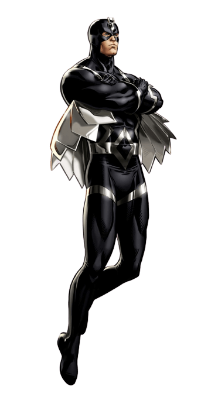

Origem. Raio Negro nasceu para os dois principais geneticistas de Attilan, Agon, chefe do Conselho de Genética, e Rynda, diretora do Centro de Cuidados Pré-Natal. Submetido à mutagênica Névoa Terrégena enquanto ainda um embrião, Raio Negro nasceu com estranhos poderes, superando até mesmo os padrões dos Inumanos.
Medusa nasceu na ilha de Attilan, tendo como pais Quelin e Ambur, ambos inumanos. Quelin era irmão de Rynda, esposa do rei Agon. Devido a essa ligação familiar, Medusa foi considerada como membro da família real de Attilan.
Dentinho nasceu em Atillan, o refúgio dos Inumanos, ele é o cachorro dos Inumanos, muito parecido com um buldogue, Dentinho é capaz de teleportar a si mesmo e até doze pessoas através do espaço ou até mesmo para outras dimensões.
Cristalys foi a segunda criança nascida dos nutricionistas inumanos Quelin e Ambur. Seu pai Quelin era o irmão de Rynda, esposa de Agon, Rei do Inumanos, e como tal ela foi considerada parte da Família Real de Attilan. Assim como sua irmã mais velha, Medusa.
Karnak é um inumano nascido na realeza de sua sociedade. Filho mais novo de Mander, um sacerdote e filósofo, e Azur, uma bióloga marinha. Diferente de outros membros da realeza que passaram pelo processo de mutação terrígena, Karnak nunca foi exposto à nevoa que desperta os poderes dos inumanos.
Triton nasceu na Ilha de Attilan e foi exposto ao Terrigen Névoa como uma criança. A névoa alterou seu corpo,transformando sua pele verde e dando-lhe capacidade de respirar debaixo d'gua. Como resultado,ele viveu em uma área concebida dos Inumanos.